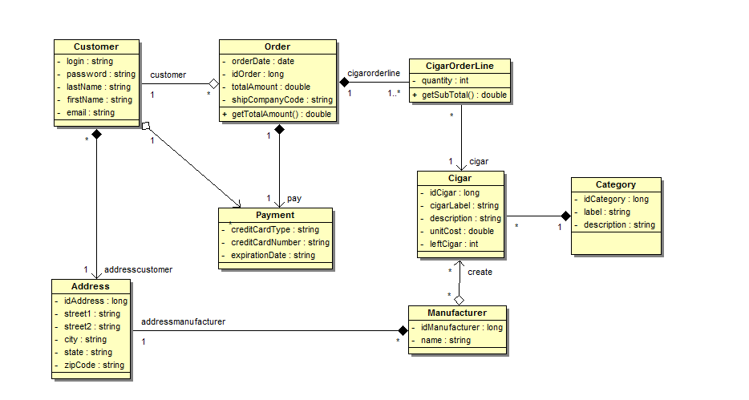
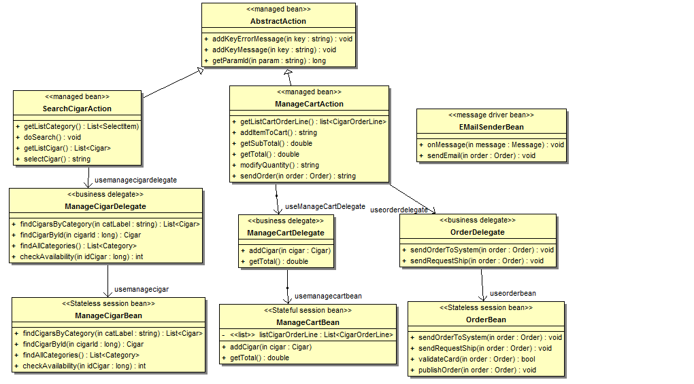
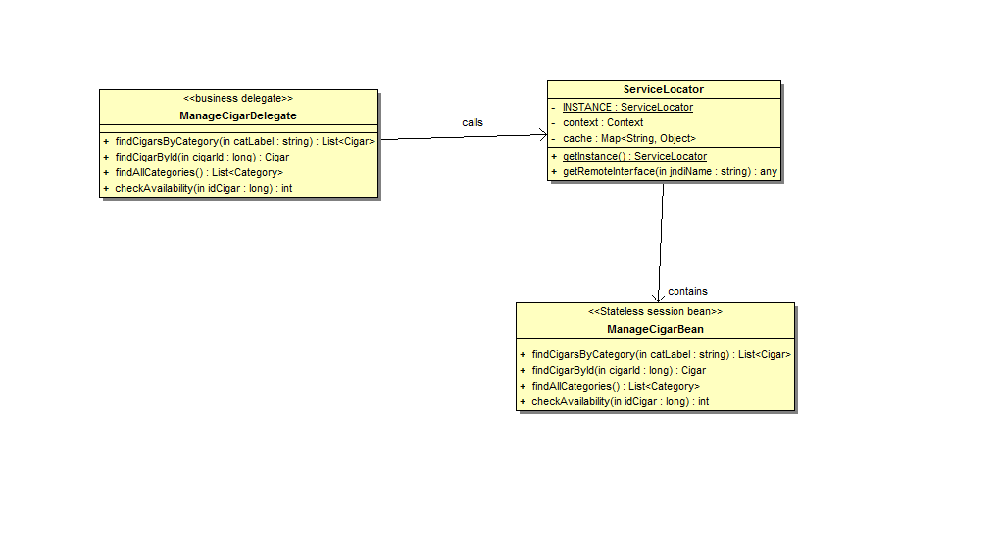
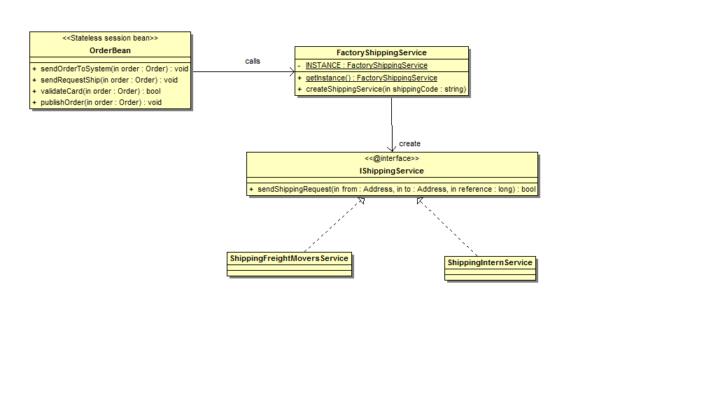

Class diagrams
- We will, first of all, presents all the entities of the application. We will not represent the getter and the setter of all the attributes because it will complexify the diagram. We must create them if the development mode.
Each order made by the customer contains cigar order line. Cigar order line contains the quantity and a reference of the cigar choose by the customer.

- We will present the managed bean class diagram. All the managed bean are managed by the controller FacesServlet. We will also presents the relation between session bean and managed bean

- We can see in this diagram that the client doesn't call directly the session bean but use a business delegate to call the session bean . The business delegate is a very known design pattern and is use to hide the complexity of remote communication with business components.
For all the link between business delegate and the stateless session bean, we can use another pattern Service Locator. The role of Service Locator pattern is used for consistent approach to locating business components. For example, we will take the manageCigarBean :

-
For shipping request, we can see that we have 2 ways for sending the orders. Freight Movers uses their own API whereas International Shippers uses web service. We can have a own shipping contract which will be unic for sending shipping request. After that, we can create 2 implementation of this class for each shipping company.
This two class will call the API of the 2 shipping companies. We will use the adapter design pattern.
